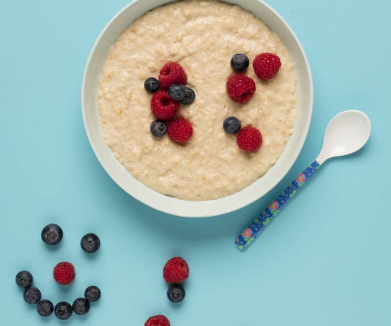

Porrige Recepie

Gear
- microwave oven
- tea spoon
- non metalic bowl
Ingridiants
- 40 gr of Roaled Oats
- 250ml of full fat milk
- tsp of honey
- optionalnuts and berries
Execution
- place the milk and oats in a bowl, proboly let them sit for a couple of minutes
- microwave the bowl for a minute
- remove the bowl from the microwave and melt in the teaspoon of honney till there is no honey on the spoon
- return the bowl to the mickrove for 40 seconds
- remove the bowl from the microwave and stir again till all content is homogenus
- add nuts and berries to preference